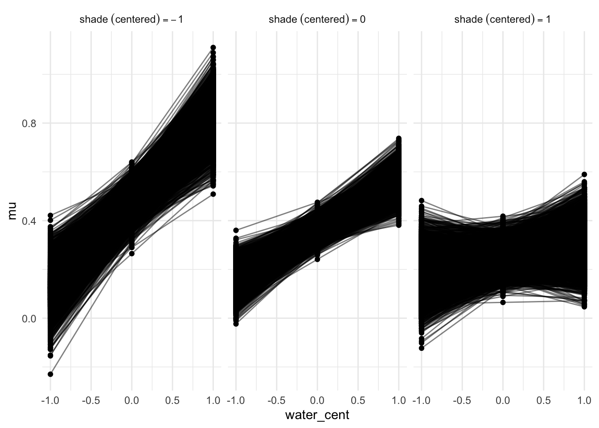

library(cmdstanr)
library(ggdist)
library(posterior)
library(tidybayes)
library(broom.mixed)
library(MetBrewer)
library(tidyverse)Linear Models in CmdStan
You goofed around and now have to learn how to use Stan and be able to do posterior stuff in Stan. They reccomend using cmdstan which is really just an interface to the command line tool. What is really great about cmdstan is that it is extremely fast and really flexible. I think you could say that one of the con is that you do have to program some of the posterior quantities of interest yourself. The good news is that for the most part you aren’t pushing the frontiers of estimates. Stan is really just a lower level wrapper around some C++. To get the wrapper to work you have to follow a somewhat strict order
functions {
// ... function declarations and definitions ...
}
data {
// ... declarations ...
}
transformed data {
// ... declarations ... statements ...
}
parameters {
// ... declarations ...
}
transformed parameters {
// ... declarations ... statements ...
}
model {
// ... declarations ... statements ...
}
generated quantities {
// ... declarations ... statements ...
}
Some of these are optional it will just depend on the uses.
A simple model
Lets walk through the Howell example
data("Howell1", package = "rethinking")
just_adults <- Howell1 |>
filter(age > 18)
model_code <- "
data {
int <lower=1> n;
vector[n] height;
}
parameters {
real alpha;
real <lower = 0, upper = 50> sigma;
}
model {
height ~ normal(alpha, sigma); // likelihood
alpha ~ normal(178, 20); // height prior
sigma ~ uniform(0, 50);
}
"
cmdstanr::write_stan_file(
model_code,
"linear-regression/stan-scripts",
basename = "simple_mod"
)
mod1_dat <- just_adults |>
select(height, weight) |>
compose_data()
models <- cmdstan_model(
stan_file = "linear-regression/stan-scripts/simple_mod.stan"
)
fitted_mod <- models$sample(
data = mod1_dat,
chains = 6
)This will fit the model then lets extract the posterior draws
fitted_mod$draws(format = "df") |>
summarise_draws()This roughly lets us get the output of the precis output. Lets see how well this replicates what I think should happen.
draws_df <- fitted_mod$draws(format = "df")
ggplot(draws_df, aes(x = alpha)) +
stat_halfeye()she looks like swe are generally in the area of our prior. Now lets add height as a variable
stan_mod2 <- "
data {
int <lower=1> n;
vector[n] height;
real avg_weight;
vector[n] weight;
}
parameters {
real alpha;
real <lower=0, upper = 50> sigma;
real <lower = 0> beta;
}
model {
vector[n] mu;
mu = alpha + beta * (weight - avg_weight);
height ~ normal(mu, sigma);
beta ~ lognormal(0, 1);
alpha ~ normal(178, 20);
sigma ~ uniform(0,50);
}
"
write_stan_file(
stan_mod2,
dir = "linear-regression/stan-scripts/",
basename = "lognormal-mod.stan"
)
log_norm_mod <- cmdstan_model(
"linear-regression/stan-scripts/lognormal-mod.stan"
)
model_data2 <- just_adults |>
select(height, weight) |>
compose_data()
model_data2$avg_weight <- mean(model_data2$weight)
fitted_log_normal <- log_norm_mod$sample(data = model_data2)Coool now we have the model. Generally we want some uncertainty around the parmeter so we can go ahead and fit some new data in the sampling code.
sampling_data <- tibble(n = c(10, 50, 150, 352))
sampling_data <- sampling_data |>
mutate(
data = map(
.x = n,
~ just_adults |>
slice(1:.x)
)
)
prep_data <- sampling_data |>
mutate(
stan_data = map(
.x = data,
.f = ~ .x |> compose_data(avg_weight = mean(.x$weight))
)
)
draws_df <- prep_data |>
mutate(
samps = map(
.x = stan_data,
.f = ~ log_norm_mod$sample(
data = .x
)
)
)
add_draws <- draws_df |>
mutate(
draws = map(.x = samps, .f = ~ as_draws_df(.x) |> slice_sample(n = 20)),
xbar = map_dbl(.x = stan_data, .f = ~ .x[["avg_weight"]]),
n = str_c("italic(n)==", n) |>
factor(levels = str_c("italic(n)==", c(10, 50, 150, 352)))
)
draws_plot <- add_draws |>
select(n, data, xbar) |>
unnest(data)
lines_plot <- add_draws |>
select(n, xbar, draws) |>
unnest(draws)
ggplot() +
geom_point(data = draws_plot, aes(x = weight - xbar, y = height)) +
geom_abline(
data = lines_plot,
aes(slope = beta, intercept = alpha, group = .draw),
color = "pink"
) +
facet_wrap(vars(n), labeller = label_parsed) +
scale_x_continuous(
"weight",
breaks = 3:6 * 10 - mean(just_adults$weight),
labels = 3:6 * 10
)Cool now we have a bunch of regression lines. What if we wanted to use some of the fun things in ggdist? Well lets get our draws data and then play around with it. If we wanted to plot the data at a variety of weights we could simply do height = alpha + beta * (weight - avg_weight)
Contrast coding
add_levels <- just_adults |>
mutate(sex = ifelse(male == 1, "Male", "Female"), sex = as.factor(sex))
levels_data <- compose_data(add_levels)
levels_data$avg_weight_female <- mean(add_levels$weight[
add_levels$sex == "Female"
])
levels_data$avg_weight_male <- mean(add_levels$weight[add_levels$sex == "Male"])
levels_data$avg_weight <- mean(add_levels$weight)What is interesting is that no matter what you do the compose data block will output a number for sex. This gives a lot of flexibility in how we specify priors. This will also change our approach to defining the model in stana
cat_model <- "
data {
int <lower = 1> n;
int<lower = 1> n_sex;
array[n] int sex;
vector[n] height;
real avg_weight;
vector[n] weight;
}
parameters {
real <lower=0> beta_weight;
vector[n_sex] alpha;
real <lower = 0, upper = 50> sigma;
}
model {
vector[n] mu;
mu = alpha[sex] + beta_weight * (weight-avg_weight);
height ~ normal(mu, sigma);
alpha[1] ~ normal(178,20);
alpha[2] ~ normal(178, 20); // just assuming women are 5 cm shorter than men
beta_weight ~ lognormal(0, 1);
sigma ~ uniform(0, 50);
}
"
write_stan_file(
cat_model,
dir = "linear-regression/stan-scripts/",
basename = "categorical_model"
)
cat_model <- cmdstan_model(
"linear-regression/stan-scripts/categorical_model.stan"
)
fitted_categorical_mod <- cat_model$sample(data = levels_data)Cool now lets get the draws and plot them
contrast_draws <- fitted_categorical_mod$draws(format = "df") |>
mutate(diff = `alpha[1]` - `alpha[2]`) |>
pivot_longer(
c(starts_with("alpha"), diff),
names_to = "sex",
values_to = "heights_by_sex"
) |>
mutate(
sex = case_when(
sex == "alpha[1]" ~ "Male",
sex == "alpha[2]" ~ "Female",
sex == "diff" ~ "Posterior Contrast between Male and Female"
)
)
ggplot(contrast_draws, aes(x = heights_by_sex)) +
stat_slab(normalize = "panels") +
stat_pointinterval() +
facet_wrap(vars(sex), scales = "free_x")Cool.
Interaction Terms in Stan
We love an interaction in political science. My guess is it is actually really simple. He is using this rugged data package s
data("rugged", package = "rethinking")
clean_data <- rugged |>
filter(complete.cases(rgdppc_2000)) |>
mutate(
log_gdp = log(rgdppc_2000),
log_gdp_z = log_gdp / mean(log_gdp),
rugged_std = rugged / max(rugged),
nice_levels = ifelse(
cont_africa == 0,
"Non-African Nation",
"African Nation"
),
cid = as.factor(cont_africa)
)
stan_data <- clean_data |>
select(log_gdp, log_gdp_z, rugged_std, cid) |>
compose_data(
avg_rugged = mean(clean_data$rugged_std)
)Cool now that we have our data lets specify the model. The .* specifies an interaction for each level of
int_categorical_model <- "
data {
int <lower=1> n;
int <lower=1> n_cid;
real avg_rugged;
array[n] int cid;
vector[n] log_gdp_z;
vector[n] rugged_std;
}
parameters {
vector[n_cid] alpha;
vector[n_cid] beta_rugged;
real <lower=0> sigma;
}
transformed parameters {
vector[n] mu;
mu = alpha[cid] + beta_rugged[cid] .* (rugged_std - avg_rugged);
}
model {
log_gdp_z ~ normal(mu, sigma);
alpha ~ normal(1, 0.1);
beta_rugged ~ normal(0, 0.3);
sigma ~ exponential(1);
}
generated quantities {
vector[n] log_lik; // so we can calculate fit statistics
for(i in 1:n) log_lik[i] = normal_lpdf(log_gdp_z[i] | mu[i], sigma);
}
"
write_stan_file(
int_categorical_model,
dir = "linear-regression/stan-scripts/",
basename = "categorical_int"
)
cat_int_mod <- cmdstan_model(
"linear-regression/stan-scripts/categorical_int.stan"
)
fitted_int_mod <- cat_int_mod$sample(
data = stan_data
)
plot_levels <- fitted_int_mod$draws(format = "df") |>
as_draws_df() |>
select(.draw, `alpha[1]`:sigma) |>
expand_grid(
cid = 1:2,
rugged_std = seq(-0.1, to = 1.1, length.out = 25),
avg_rugged = mean(clean_data$rugged_std)
) |>
mutate(
mu = case_when(
cid == "1" ~ `alpha[1]` + `beta_rugged[1]` * (rugged_std - avg_rugged),
cid == "2" ~ `alpha[2]` + `beta_rugged[2]` * (rugged_std - avg_rugged)
),
nice_levels = ifelse(cid == 1, "African Nation", "Non-African Nation")
)
ggplot(plot_levels, aes(x = rugged_std, color = nice_levels)) +
stat_lineribbon(aes(y = mu, fill = nice_levels)) +
geom_point(data = clean_data, aes(y = log_gdp_z)) +
facet_wrap(vars(nice_levels)) +
xlim(0:1)Continous Interactions
data("tulips", package = "rethinking")
clean_tulips <- tulips |>
mutate(
blooms_std = blooms / max(blooms),
water_cent = water - mean(water),
shade_cent = shade - mean(shade)
)
d_pred <- crossing(
water_cent = -1:1,
shade_cent = -1:1
) |>
mutate(i = row_number())
cont_int_data <-
clean_tulips |>
compose_data(
w_pred = pull(d_pred, water_cent),
s_pred = pull(d_pred, shade_cent),
n_pred = nrow(d_pred)
)Cool lets define the model
cont_int_model <- "
data {
int <lower=0> n;
int <lower=0> n_pred;
vector[n] blooms_std;
vector[n] shade_cent;
vector[n] water_cent;
vector[n_pred] s_pred;
vector[n_pred] w_pred;
}
parameters {
real alpha;
real beta1;
real beta2;
real beta3;
real <lower=0> sigma;
}
model {
blooms_std ~ normal(alpha + beta1 * water_cent + beta2 * shade_cent + beta3.* water_cent .* shade_cent, sigma);
alpha ~ normal(0.5, 0.25);
// long form
//beta1 ~ normal(0, 0.25);
//beta2 ~ normal(0, 0.25);
//beta3 ~ normal(0, 0.25);
[beta1, beta2, beta3] ~ normal(0, 0.25);
sigma ~ exponential(1);
}
generated quantities {
vector[n_pred] mu ;
mu = alpha + beta1 * w_pred + beta2 * s_pred + beta3 .* w_pred .* s_pred;
}
"
write_stan_file(
cont_int_model,
"linear-regression/stan-scripts",
basename = "cont-int"
)
int_cont_model <- cmdstan_model("linear-regression/stan-scripts/cont-int.stan")
fitted_int_model <- int_cont_model$sample(
data = cont_int_data,
thin = 1,
iter_sampling = 2000,
iter_warmup = 1000
)Coolio we have the fitted model now its time to extract some things for plots.
draws_from_int_model <- fitted_int_model$draws(format = "df")
plotting_draws <-
spread_draws(draws_from_int_model, mu[i]) |>
left_join(d_pred, join_by(i)) |>
mutate(nice_labs = str_c("shade~(centered)==", shade_cent)) |>
ungroup()
ggplot(plotting_draws, aes(x = water_cent, y = mu, group = .draw)) +
geom_point() +
geom_line(alpha = 0.5) +
facet_wrap(vars(nice_labs))
Which gets us the plot from the book. Lets look at the diagnostics
bayesplot::mcmc_trace(draws_from_int_model)